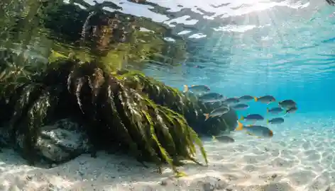

물고기
물고기들
우리나라 바다에는 농어, 놀래기, 볼락, 전어처럼 계절에 따라 달라지는 다양한 물고기들이 살아요. 해초밭과 바위 틈은 작은 물고기들의 쉼터가 됩니다.
살기 좋은 곳
해초밭 · 바위 해안 · 얕은 바다

지역마다, 수심과 계절에 따라 다양한 바다 생물을 만날 수 있어요. 대표적인 친구들을 먼저 소개합니다.
우리나라 바다에는 농어, 놀래기, 볼락, 전어처럼 계절에 따라 달라지는 다양한 물고기들이 살아요. 해초밭과 바위 틈은 작은 물고기들의 쉼터가 됩니다.
미역, 다시마, 모자반 같은 해조류는 바다 속 숲을 만들어요. 물고기에게 숨을 곳을 주고, 산소를 만들고, 바닷속 환경을 지켜줍니다.
갯벌, 암초, 해초밭, 모래밭은 각각 다른 생물의 집이 됩니다. 같은 바다라도 장소에 따라 사는 생물이 달라져요.
물속에는 어떤 풍경이 펼쳐질까요? 해초와 물고기가 어우러진 바닷속 모습을 사진으로 만나보세요.
바닷속 풍경을 소개할 영상 공간입니다. 아직 영상이 연결되지 않았습니다.
대한민국 바다는 단순히 푸르기만 한 곳이 아니라, 수많은 바다 생물이 살아가고 번식하는 소중한 생태계예요.
바닷속에는 생각보다 많은 생명들이 살고 있어요. 관심을 갖고 살펴보는 것부터 바다 보전의 시작입니다.